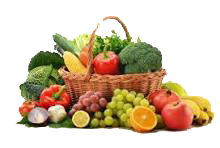
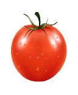
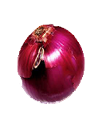
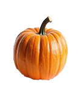
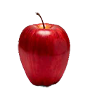
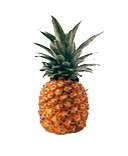
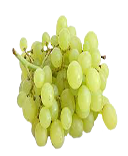

 |
Create links that will connect the viewers to the best vegetables and fruits available online. The article will have separate headings for vegetables and fruits with links to the online image gallery followed by a brief description on the health benefits if consumed properly. Three beautiful images each will be included to showcase the items with a fresh look to give a brief idea about the content. Include some sort of styles to give beauty to the content. |
Vegetables are the best source of vitamins and fibers which we cannot skip. Most of the diseases are reported due to the lack of vegetable intake. Half cooked or steamed vegetables are rich in vitamines and fiber. Evenif the new generation knows the importance of vegetables intake, they are totally unhappy to include it with their crazy foods. The best part is that anybody can have vegetables without much restrictions.
| Tomoto | Onion | Pumkin |
|---|---|---|
 |  |  |
Fruits are rich in vitamines and natural sugar. Diabetic patients need a control over the fruit intake as most of the fruits carry excess sugar in it.
| Apple | Pineapple | Grapes |
|---|---|---|
 |  |  |